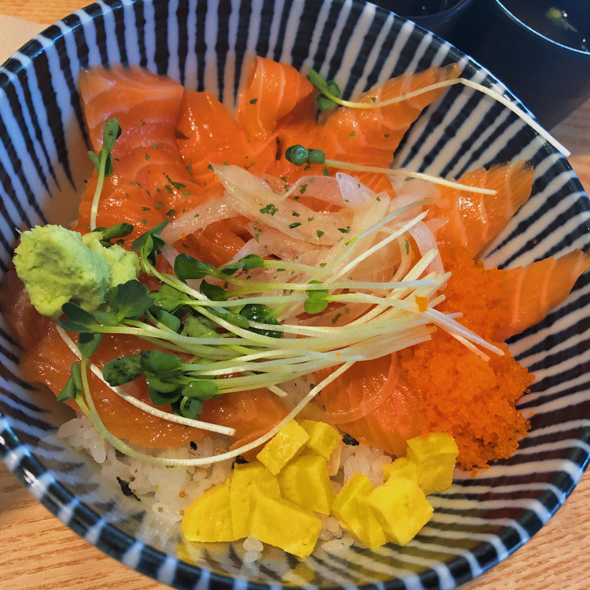

스시건

스시건은 고시촌에 위치한 초밥 위주 일식 가게입니다.
고시촌에서 가장 저렴한 가격인 6500원으로 사케동을 먹을 수 있습니다.
사케동 뿐만 아니라 다양한 초밥들이나 회덮밥도 먹을 수 있습니다.
밥 위에 날치알과 계란도 올려줍니다.
나오는 속도도 그렇게 느린 편은 아닙니다.
장국과 샐러드가 제공 됩니다.
단점은 다른 곳에 비해 양이 적습니다.
주소 : 서울 관악구 호암로24길 35
고시촌 미식회 별점:★★★
▲ 위 사진을 누르시면 스시건의 자세한 정보를 보실 수 있습니다.